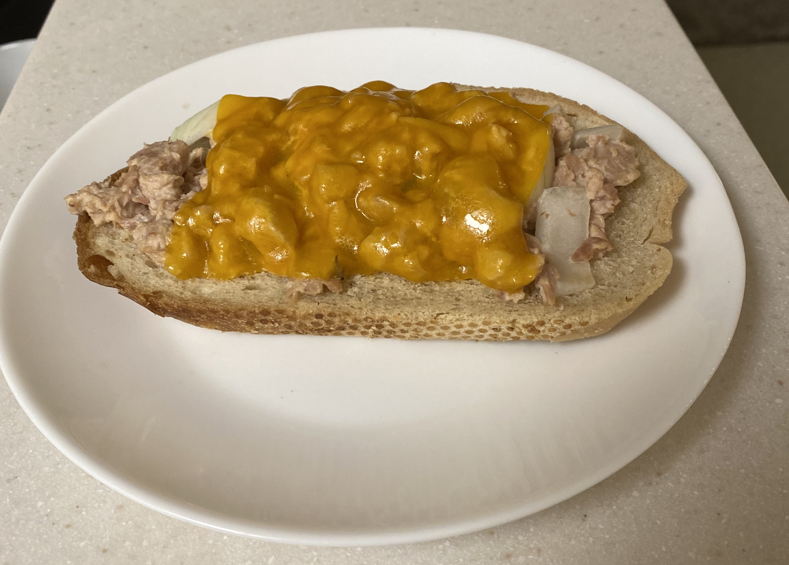

Tuna Melts
A quick and easy lunch to help you power through the day.
Ingredients
- 1 Slice Bread
- 1 Pouch Tuna
- 2 tsp Mayonaise
- 1 Slices Cheddar Cheese
Instructions
- Preheat oven to 400 degrees Fahrenheit.
- Put tuna in a medium size bowl.
- Stir in maynoise (more or less to taste).
- Evenly spread tuna mixture on the slice of bread.
- Place one slice of cheese on the slice of bread.
- Place on cookie sheet and cook in oven until the cheese is melty and the bread is browned.
- Let cool and enjoy!
Optional Additions: Feel free to mix in whatever you want, like onions, celery, or hot sauce.